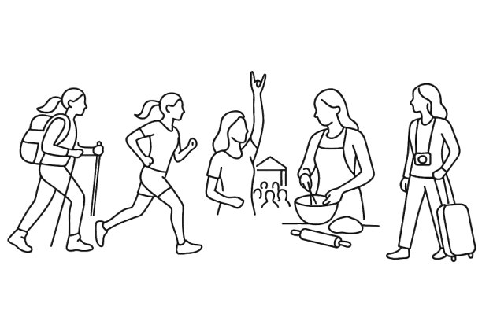
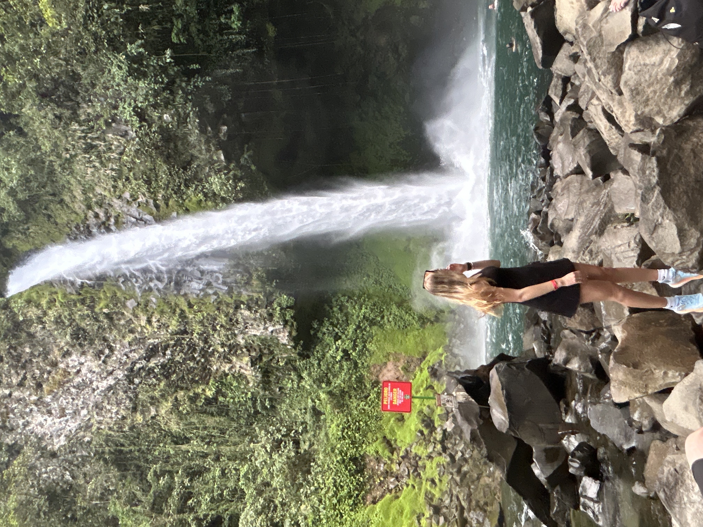

Hobbies
I am passionate about many things in life but here are some of my favorites:
- Hiking
- Finding peace and adventure on the trails
- Running
- Enjoying the rhythm of my feet on the pavement
- Going to concerts
- Experiencing live music and the energy of the crowd
- Baking
- Creating delicious treats for friends and family
- Traveling
- Exploring new places and cultures


This was taken in Costa Rica!